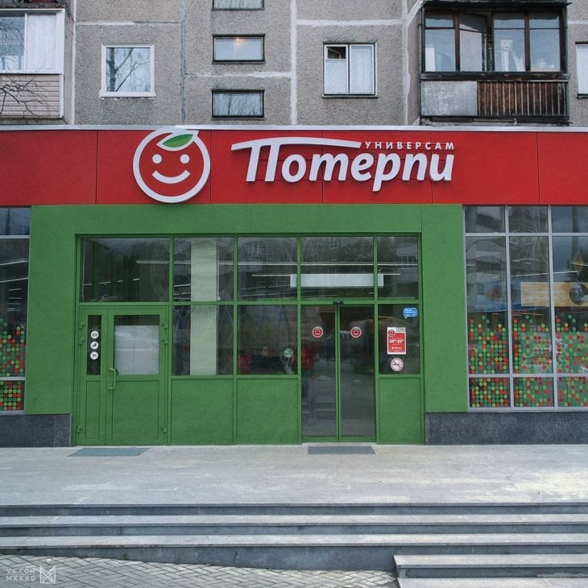
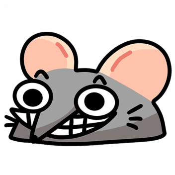
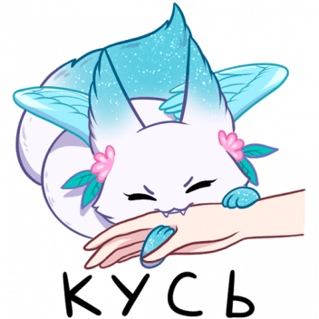
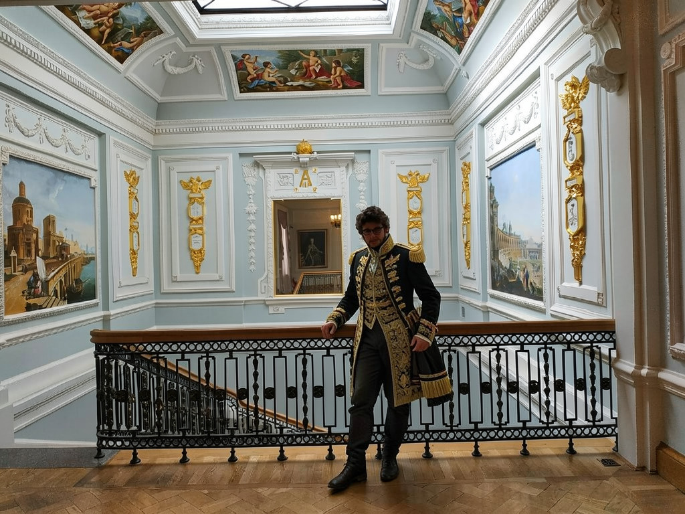

ЕГО ГРАФСКОЕ СИЯТЕЛЬСТВО
«Князь Мышкин был кроток, наивен и любил людей. Но у князя не было 1164 часов волонтёрства и он не работал в Пятёрочке.»
© Ф.М. Достоевский, "Идиот"

«Его Сиятельство изволит трудиться провизором в продуктовой лавке. А по версии шута - крепостным в сфере обслуживания, который сам себе амбарная книга (. ❛ ᴗ ❛.). Знает всё лицо товара! Особенно крепкий алкоголь (хотя сам не пьёт, ибо обет трезвости дал). Может проконсультировать крепостных по акциям.»

«Граф настаивал на Шереметьеве или Юсупове. Шут настаивает на Мышкине. Спор длится до сих пор. Побеждает Мышкин, потому что у Шута есть сила мема ᕙ( ͡◉ ͜ ʖ ͡◉)ᕗ»

«Шут: "Мне продолжать драться?" Граф: "Пробуй". Драка продолжается прямо на этой странице, уворачивайтесь!»
«Ты думал я, бть, не полезу в твой профиль ради этого 😈»

«Его Сиятельство в естественной среде обитания. Прошу не беспокоить по пустякам.»